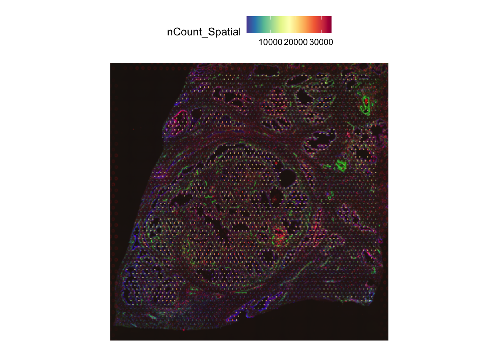

Visium FFPE Prostate Tissue Analysis
Givanna Putri
2024-10-03
Last updated: 2024-10-06
Checks: 7 0
Knit directory: asi_spatial_workshop_2024/
This reproducible R Markdown analysis was created with workflowr (version 1.7.1). The Checks tab describes the reproducibility checks that were applied when the results were created. The Past versions tab lists the development history.
Great! Since the R Markdown file has been committed to the Git repository, you know the exact version of the code that produced these results.
Great job! The global environment was empty. Objects defined in the global environment can affect the analysis in your R Markdown file in unknown ways. For reproduciblity it’s best to always run the code in an empty environment.
The command set.seed(20240925) was run prior to running
the code in the R Markdown file. Setting a seed ensures that any results
that rely on randomness, e.g. subsampling or permutations, are
reproducible.
Great job! Recording the operating system, R version, and package versions is critical for reproducibility.
Nice! There were no cached chunks for this analysis, so you can be confident that you successfully produced the results during this run.
Great job! Using relative paths to the files within your workflowr project makes it easier to run your code on other machines.
Great! You are using Git for version control. Tracking code development and connecting the code version to the results is critical for reproducibility.
The results in this page were generated with repository version d32b1e8. See the Past versions tab to see a history of the changes made to the R Markdown and HTML files.
Note that you need to be careful to ensure that all relevant files for
the analysis have been committed to Git prior to generating the results
(you can use wflow_publish or
wflow_git_commit). workflowr only checks the R Markdown
file, but you know if there are other scripts or data files that it
depends on. Below is the status of the Git repository when the results
were generated:
Ignored files:
Ignored: .DS_Store
Ignored: .Rhistory
Ignored: .Rproj.user/
Ignored: data/.DS_Store
Ignored: data/hello.txt
Ignored: data/visium_ffpe_human_prostate/
Unstaged changes:
Modified: analysis/index.Rmd
Note that any generated files, e.g. HTML, png, CSS, etc., are not included in this status report because it is ok for generated content to have uncommitted changes.
These are the previous versions of the repository in which changes were
made to the R Markdown (analysis/visium_ffpe_prostate.Rmd)
and HTML (docs/visium_ffpe_prostate.html) files. If you’ve
configured a remote Git repository (see ?wflow_git_remote),
click on the hyperlinks in the table below to view the files as they
were in that past version.
| File | Version | Author | Date | Message |
|---|---|---|---|---|
| Rmd | d32b1e8 | Givanna Putri | 2024-10-06 | wflow_publish("analysis/visium_ffpe_prostate.Rmd") |
Introduction
The idea is to use the insight from this paper, and see whether we can extract some gene expressions that are interesting, and perhaps also uncover some immune cells that are critical.
The prostate cancer data has gleason score of 7.
TIFF file
There is a fluorescence image (IF) comprising of 3 channels:
- Channel 1: Iba1/AIF-1
- Channel 2: Vimentin
- Channel 3: DAPI
The TIFF file contains all the channels, separated into 3 pages.
Helpful Hints:
For this dataset, the fluorescence image is a grayscale multi-page TIFF. Thus, when running spaceranger, we need to specify the
--darkimageparameter and pass the name of the TIFF file in.Additionally, we also need to load the output of fiducial alignment process done separately using the Loupe Browser software from 10x. More information at the bottom of this section.
Post processing by spaceranger, there will be a folder called
spatial. Within the folder, there is a file called
tissue_hires_image.png. This file was generated by
spaceranger based on the fluorescence image file (which is a grayscale
image for this dataset). It collapses the 3 channels into 1 image and
assign different colour to different channel.

However it is not clear which colour belong to which channel. To work this out, we can import the TIFF file into ImageJ using the Bio-Formats plugin and visually match the colours in the image against the brightest part of the TIFF image’s channels.
Demo:
Load the TIFF file using ImageJ’s Bio-Formats plugin.
Once loaded, align the window showing each channel side by side with the high-res image generated by spaceranger. Then look for the bright area on ImageJ and correspond it to the high-res image.
We can zoom in and out on ImageJ by pressing the + or - keys. We can change channel by using the left and right arrow keys. Clicking on ImageJ will automatically zoom the window in to the area you clicked.
From here, one can determine that:
- Green = Iba1/Channel 1
- Red = Vimentin/Channel 2
- Blue = DAPI
Notes on fiducial alignment: Fiducial alignment is a process of aligning images from different rounds of sequencing or imaging The purpose of this process is to make sure we correctly align the fluorescence images with the coordinates of the spots. For visium data containing fluorescence images, the alignment process has to be done manually. This can be done using 10x Loupe Browser. The process on how to do fiducial alignment is out of the scope of the workshop. For more information, you can refer to the guide written by 10x here.
Tips: More details on what each of the spatial output file means is available here.
Setup
library(Seurat)Loading required package: SeuratObjectLoading required package: sp'SeuratObject' was built under R 4.4.0 but the current version is
4.4.1; it is recomended that you reinstall 'SeuratObject' as the ABI
for R may have changed
Attaching package: 'SeuratObject'The following objects are masked from 'package:base':
intersect, tPreprocess
The H5 file and the spatial folder came from SpaceRanger.
The spatial folder is required for seurat to find the following extra information:
tissue_lowres_image.png: the image of the slidescalefactors_json.json: the scale factors to convert the high-resolution coordinates and the scaled-down coordinates - need to check whether this is the conversion from the high res image to low res.tissue_positions_list.csv: coordinates for each spot
NOTE the function requires hdf5r package.
dat <- Load10X_Spatial(
data.dir = 'data/visium_ffpe_human_prostate',
filename = 'filtered_feature_bc_matrix.h5'
)Quick view of the tissue.
SpatialFeaturePlot(
dat,
features = "nCount_Spatial",
pt.size.factor = 1,
alpha = c(0.1, 1)
)
What function does above is use the
sessionInfo()R version 4.4.1 (2024-06-14)
Platform: aarch64-apple-darwin20
Running under: macOS Sonoma 14.6
Matrix products: default
BLAS: /Library/Frameworks/R.framework/Versions/4.4-arm64/Resources/lib/libRblas.0.dylib
LAPACK: /Library/Frameworks/R.framework/Versions/4.4-arm64/Resources/lib/libRlapack.dylib; LAPACK version 3.12.0
locale:
[1] en_US.UTF-8/en_US.UTF-8/en_US.UTF-8/C/en_US.UTF-8/en_US.UTF-8
time zone: Australia/Melbourne
tzcode source: internal
attached base packages:
[1] stats graphics grDevices utils datasets methods base
other attached packages:
[1] Seurat_5.1.0 SeuratObject_5.0.2 sp_2.1-4 workflowr_1.7.1
loaded via a namespace (and not attached):
[1] RColorBrewer_1.1-3 rstudioapi_0.16.0 jsonlite_1.8.9
[4] magrittr_2.0.3 spatstat.utils_3.1-0 farver_2.1.2
[7] rmarkdown_2.28 fs_1.6.4 vctrs_0.6.5
[10] ROCR_1.0-11 spatstat.explore_3.3-2 htmltools_0.5.8.1
[13] sass_0.4.9 sctransform_0.4.1 parallelly_1.38.0
[16] KernSmooth_2.23-24 bslib_0.8.0 htmlwidgets_1.6.4
[19] ica_1.0-3 plyr_1.8.9 plotly_4.10.4
[22] zoo_1.8-12 cachem_1.1.0 whisker_0.4.1
[25] igraph_2.0.3 mime_0.12 lifecycle_1.0.4
[28] pkgconfig_2.0.3 Matrix_1.7-0 R6_2.5.1
[31] fastmap_1.2.0 fitdistrplus_1.2-1 future_1.34.0
[34] shiny_1.9.1 digest_0.6.37 colorspace_2.1-1
[37] patchwork_1.3.0 ps_1.8.0 rprojroot_2.0.4
[40] tensor_1.5 RSpectra_0.16-2 irlba_2.3.5.1
[43] labeling_0.4.3 progressr_0.14.0 fansi_1.0.6
[46] spatstat.sparse_3.1-0 httr_1.4.7 polyclip_1.10-7
[49] abind_1.4-8 compiler_4.4.1 withr_3.0.1
[52] bit64_4.5.2 fastDummies_1.7.4 highr_0.11
[55] MASS_7.3-61 tools_4.4.1 lmtest_0.9-40
[58] httpuv_1.6.15 future.apply_1.11.2 goftest_1.2-3
[61] glue_1.7.0 callr_3.7.6 nlme_3.1-166
[64] promises_1.3.0 grid_4.4.1 Rtsne_0.17
[67] getPass_0.2-4 cluster_2.1.6 reshape2_1.4.4
[70] generics_0.1.3 hdf5r_1.3.11 gtable_0.3.5
[73] spatstat.data_3.1-2 tidyr_1.3.1 data.table_1.16.0
[76] utf8_1.2.4 spatstat.geom_3.3-3 RcppAnnoy_0.0.22
[79] ggrepel_0.9.6 RANN_2.6.2 pillar_1.9.0
[82] stringr_1.5.1 spam_2.10-0 RcppHNSW_0.6.0
[85] later_1.3.2 splines_4.4.1 dplyr_1.1.4
[88] lattice_0.22-6 bit_4.5.0 survival_3.7-0
[91] deldir_2.0-4 tidyselect_1.2.1 miniUI_0.1.1.1
[94] pbapply_1.7-2 knitr_1.48 git2r_0.33.0
[97] gridExtra_2.3 scattermore_1.2 xfun_0.47
[100] matrixStats_1.4.1 stringi_1.8.4 lazyeval_0.2.2
[103] yaml_2.3.10 evaluate_1.0.0 codetools_0.2-20
[106] tibble_3.2.1 cli_3.6.3 uwot_0.2.2
[109] xtable_1.8-4 reticulate_1.39.0 munsell_0.5.1
[112] processx_3.8.4 jquerylib_0.1.4 Rcpp_1.0.13
[115] globals_0.16.3 spatstat.random_3.3-2 png_0.1-8
[118] spatstat.univar_3.0-1 parallel_4.4.1 ggplot2_3.5.1
[121] dotCall64_1.1-1 listenv_0.9.1 viridisLite_0.4.2
[124] scales_1.3.0 ggridges_0.5.6 leiden_0.4.3.1
[127] purrr_1.0.2 rlang_1.1.4 cowplot_1.1.3